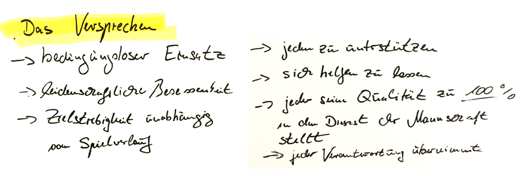
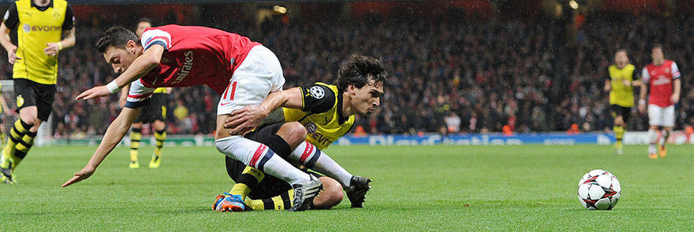
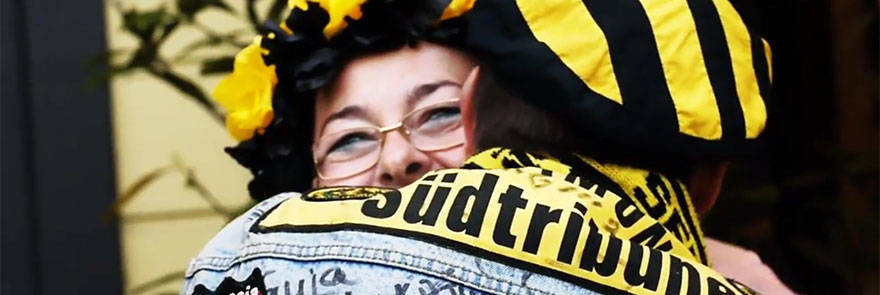
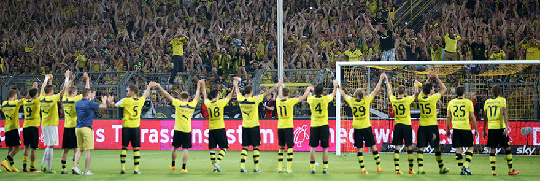
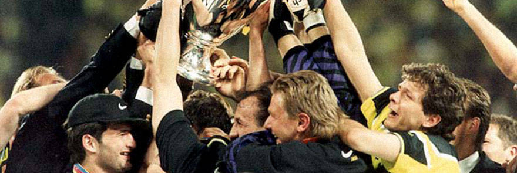

Borussia Dortmund is the intense football experience

Borussia Dortmund stands for intensity, authenticity, cohesion and
ambition. There's an intense character to everything we do. Our
stadium is the epicentre. This is where all of BVB's energy is
released. We enjoy a special place in the hearts of all our fans:
their unconditional loyalty has carried us through the good times
and the bad for more than 100 years. We are determined to give
them something back. Be it through sporting success, or through
our promise to remain true to our traditional ethos and be as
we've always been: sincere, candid, battling and grounded in the
values of Dortmund – the city and its people.
Intensity

Borussia Dortmund is a uniquely intensive footballing experience.
Everything about the club is charged with maximum energy and deep
emotion. The club colours black and yellow are a visual expression
of this intensity. It makes BVB unique and ensures that the club
captivates so many people.
Authenticity

Borussia Dortmund is wholeheartedly loved by its fans. Like them,
BVB is deeply connected to the values that characterise its home
city Dortmund and the Westfalian region: candour, sincerity and
grit. We wear this authenticity as a badge of honour but also bear
the scars and worry lines that come with it. It makes BVB
endearing and ensures the club is supported by its fans through
thick and thin.
Cohesion

Borussia Dortmund is a spiritual home and extended family for many
people. BVB carries enormous appeal: for the people of Dortmund,
it is the one constant that provides happiness and solidarity in a
city that has experienced so much upheaval. The fans'
unconditional loyalty is a visible expression of this cohesion. It
has made BVB a crowd magnet and ensures that the club can always
rely on its fans even during difficult times.
Ambition

Borussia Dortmund is an important and successful club. BVB has won
many hearts in its long history and delivered many major honours:
the UEFA Champions League, European trophies and German
championships. The willingness to always give everything for the
cause and get up time and again after falling is the visual
expression of this ambition. It has made BVB a permanent fixture
in the Bundesliga and ensures that it can face its opponents full
of confidence and pride.